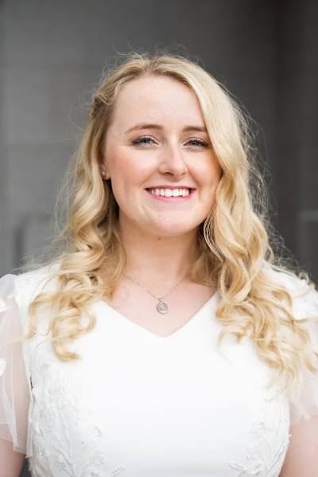

Julianne P Sombke | WWD 130

Hi! My name is Julianne Sombke. I am originally from Folsom, California, I served my mission in New York City, and eventually ended up in Provo to attend BYU. I graduated with a history degree in 2022, and now I work as a product manager for a family history company. I am excited to learn more about web development! My husband Boyd and I got married about 6 months ago